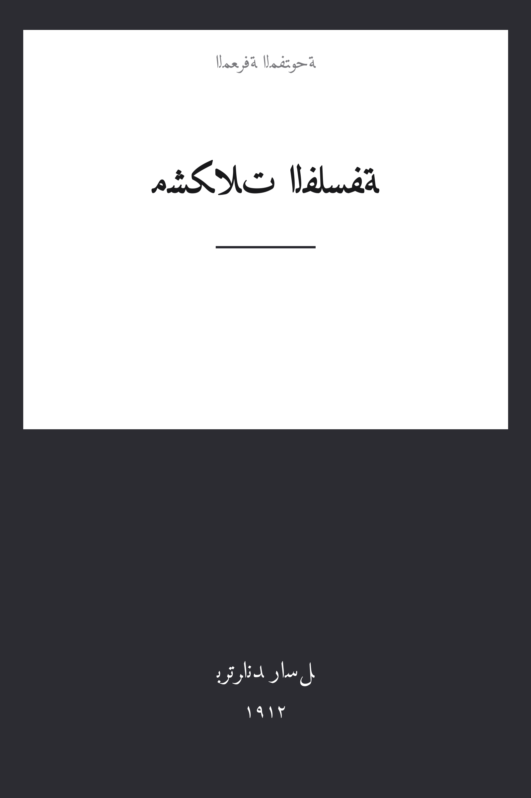

The Problems of Philosophy
مشكلات الفلسفة
الفلسفة
ملك عام
ترجمة كاملة
مشكلات الفلسفة — أشهر كتب برتراند راسل تربوياً وأوجزها: هل يختلف المظهر الذي نراه عن الحقيقة في نفسها؟ وماذا نعني حين نقول إننا «نعرف» شيئاً؟ وكيف نميّز المعرفة بالمباشرة عن المعرفة بالوصف؟ وهل للاستقراء من مبرر؟ مدخلٌ رصين إلى نظرية المعرفة والميتافيزيقا كتبه أحد أعظم فلاسفة القرن العشرين ليقرأه العامّة لا الخاصة، بترجمة كاملة عن نص 1912 بمقدمته وخمسة عشر فصله.
| المؤلف | برتراند راسل — Bertrand Russell |
| سنة النص الأصلي | ١٩١٢ |
| كلمات المصدر (الإنجليزية) | ٤٣١٤٥ |
| كلمات الترجمة (العربية) | ٣٢١٨٣ |
| مقاطع الترجمة المدققة | ٣٠ |
| مدة القراءة التقريبية | ≈ ٧٣١ دقيقة |
الترخيص والحقوق: النص الأصلي (1912) في الملك العام. هذه الترجمة العربية منشورة بإذن حر. المصدر: gutenberg.org/ebooks/5827